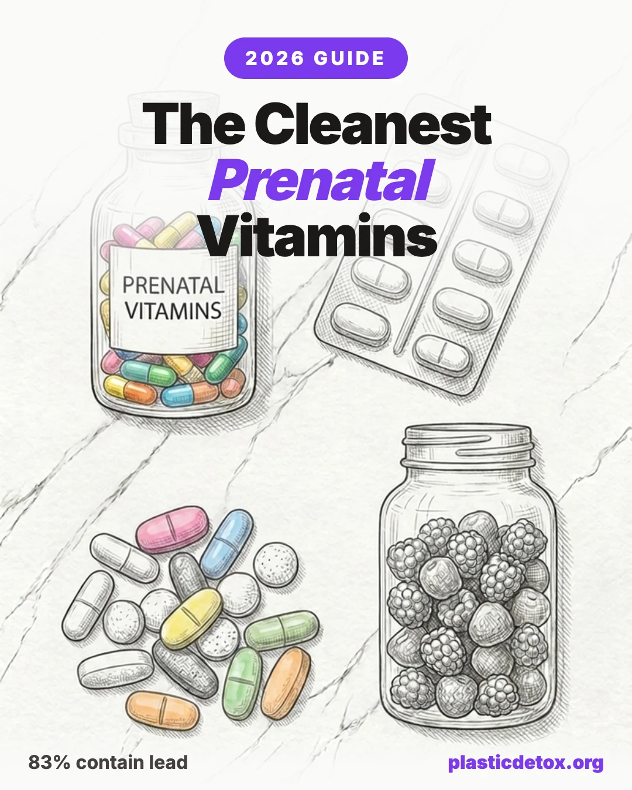

The Cleanest Prenatal Vitamins: What Independent Testing Actually Shows (2026)

The 30 Second Summary
- Heavy metals are documented, microplastics are precautionary. Most prenatals tested contain lead and cadmium, a meaningful share contain phthalates, and no published study has measured microplastics in prenatals specifically. Both are handled honestly here.
- No prenatal is fully clean. Not a single independently tested prenatal has come back non detect across all four metals (lead, cadmium, mercury, arsenic). Transparency is the strongest available signal of safety.
- Top pick: Needed Prenatal Powder for comprehensive nutrition, full batch transparency, and no capsule shell to shed plastic. Strong alternative: FullWell Prenatal (iron free HPMC capsules). Prefer capsules over powder? Needed Prenatal Multi Capsules, same testing, 8 a day.
- USP Verified pick: Theralogix Theranatal, the only mainstream prenatal multi carrying USP Verification.
- Form factor matters. Hard shell HPMC capsules in a plastic bottle are dramatically cleaner than softgels. If you take a softgel or gummy prenatal, that switch is the single best move.
- The benefit outweighs the risk for nearly everyone. The goal is choosing the cleanest defensible option, not skipping the supplement. General information, not medical advice.
Independent testing has covered prenatal vitamins more thoroughly than almost any other supplement category. The findings are uncomfortable: most prenatals tested contain lead and cadmium, a meaningful share contain phthalates, and no published study has yet measured microplastic content in prenatals specifically. This guide walks through what has been tested, what has been found, the brands that disclose their batch testing, and the realistic best picks for pregnancy, lactation, and preconception.
Heavy metals are the documented story. Microplastics are the precautionary one. Both are handled honestly. We mark our claims by evidence strength throughout, using the same badges from our supplements and microplastics guide:
Inferred a study tested a known component, the packaging material, or a closely adjacent product.
Precautionary no direct test, but the supply chain and form factor make exposure plausible.
Part One: What Has Actually Been Tested
1. The 2025 University of Miami and Clean Label Project Study (The Big One)
DirectThis is the most comprehensive prenatal contamination study published to date. Researchers tested 156 over the counter prenatals, 19 folate products, and 9 prescription prenatals for heavy metals and phthalates. The headline findings:
- Lead: 83% of products had quantifiable lead. 15% exceeded the California Prop 65 threshold of 0.5 micrograms per serving.
- Cadmium: 73% had detectable cadmium, and 73% exceeded the Prop 65 threshold of 4.1 micrograms.
- Phthalates: 25% contained DEHP and 13% contained DBP. Both are plastic derived plasticizers, which makes this the closest thing we have to plastic exposure data for prenatals.
- Prescription was not immune: one third of the prescription prenatals exceeded Prop 65 for lead. A doctor's signature is not a contamination filter.
- What correlated with higher contamination: higher calcium and iron doses, and caplet, capsule, or tablet form factors that pack more mineral mass per serving.
- The CRN challenge (January 2025). The Council for Responsible Nutrition publicly challenged the Clean Label Project methodology, as it has with CLP's protein work, citing limited brand level transparency in the released data and the fact that Prop 65 thresholds are far more conservative than federal limits. Fair points about presentation and threshold choice. The lead findings still hold. Lead was quantified in the large majority of products regardless of which threshold you apply.
- The March 2026 Pharmacy Times reporting. A separate 47 prenatal study drew criticism after researchers had inadvertently applied raw material heavy metal standards to finished product doses. That is a real methodological error, and both CRN and USP flagged it correctly. It does not retroactively invalidate the University of Miami and CLP work, which measured finished products against serving level thresholds.
The honest reading: the heavy metals story is real, the methodology debates are also real, and we are specific about which findings hold (lead and cadmium prevalence in finished products) and which do not (any single sensational number built on the wrong threshold) rather than letting either side of the dispute set the conclusion.
2. The 2023 to 2024 GAO Report
DirectThe Government Accountability Office tested 12 best selling prenatals for both nutrient content and heavy metals. Lead or cadmium was found in half of them. The report also surfaced a label accuracy problem that has nothing to do with plastic but everything to do with whether you are getting what the box says: Vitamin E ranged from 28% to 332% of the label claim, and Vitamin A was frequently outside the acceptable range. The GAO recommended that Congress give the FDA more authority over the category. As of this writing that authority has not materialized, which is part of why brand transparency carries so much weight.
3. Lead Safe Mama's Community Testing (Ongoing 2024 to 2026)
DirectTamara Rubin's Lead Safe Mama project has individually tested 25 or more popular prenatals at independent labs and published the reports publicly. The single most important takeaway from this body of work:
The brand by brand results include Thorne Basic Prenatal, Thorne Prenatal DHA, Pure Synergy PureNatal, Perelel, Garden of Life, and many others. A notable result: in February 2025, Thorne Prenatal DHA became the first prenatal product in the Lead Safe Mama database to test non detect for lead specifically. That is real and worth crediting. The caveats are equally real: it tested positive for mercury, and it is a softgel, which works against the form factor argument we make below. It is also the standalone DHA product, not a complete multivitamin.
A brand testing positive is not automatically disqualifying. Every prenatal does. What separates the contenders from the rest is whether the brand publishes its certificates of analysis with lot numbers, including the ones that show positive results. Transparency under pressure is the signal.
4. The Microplastics Gap
PrecautionaryNo published study has measured microplastic content in prenatal vitamins specifically. That gap is the honest center of this section. What we have instead is a chain of adjacent evidence that makes precaution reasonable:
- InferredThe phthalate data is the closest proxy. DEHP and DBP, found in a quarter and an eighth of prenatals respectively by the CLP study, are plasticizers. Their presence confirms plastic chemistry is reaching the finished product.
- InferredThe form factor logic carries over. As covered in our supplements guide, encapsulated oil has tested at 3 to 5 times the microplastic load of raw oil, and a daily softgel or capsule across nine months of pregnancy is chronic encapsulation exposure rather than a one off.
- PrecautionaryPregnancy is when precaution matters most. Microplastics have now been found in human placentas, and the fetal period is uniquely vulnerable to endocrine disrupting exposures. This is the window where a low cost precaution carries the highest potential value.
If you are weighing the preconception angle, our companion piece on microplastics and fertility covers the reproductive evidence in depth.
5. California SB 646 (The Timely Hook)
DirectSigned by Governor Newsom in October 2025, SB 646 is the first state law requiring routine testing and public disclosure of heavy metals in prenatal vitamins. The mechanics:
- Manufacturers must test each production lot for arsenic, cadmium, lead, and mercury, beginning in 2027.
- Results must be reported to the California Department of Public Health.
- Results must be disclosed on product labels and websites.
What it changes: for the first time, lot level heavy metal data on prenatals becomes mandatory and public for products sold in California, which in practice means most national brands. What it does not change: it mandates disclosure but does not set a contamination ceiling, so a product can disclose a high number and still be sold. And it does not cover microplastics or phthalates at all. It is a transparency law, not a safety standard, and it is a meaningful first step rather than a finish line.
Part Two: How to Read a Prenatal Label
6. The Form Ranking, Applied to Prenatals
The same form ranking from our supplements guide applies here, with prenatal specific notes. The form factor of your prenatal often matters more than the brand on the label.
| Rank | Form | Prenatal reality | Caveats |
|---|---|---|---|
| 1 | Liquid in glass | Cleanest if you can build a stack. Rare for full prenatals, exists for some single nutrient pieces. | You will likely need multiple products to cover a full prenatal profile. |
| 2 | Powder in glass | Rare for complete prenatals. FullWell and a handful of others offer a powder. | Taste and daily mixing. Most powders still ship in plastic. |
| 3 | Hard shell HPMC capsule in plastic bottle | The realistic best option for most multi nutrient prenatals. | Bottle still sheds. Transfer to glass at home. |
| 4 | Softgel | The worst form, and disproportionately common in prenatals for the fat soluble vitamins. | Phthalate plasticized shell plus bottle leaching. |
| 5 | Gummy | Skip entirely. | Sugar, plastic packaging, low active doses, and often missing iron and other key nutrients. |
| 6 | Single use daily packet | Maximum surface area to dose ratio of plastic contact (Perelel, Ritual single day packs). | Convenience comes at the cost of the most plastic contact per dose in the category. |
7. What "Third Party Tested" Actually Means for Prenatals
Prenatal marketing leans hard on testing language, most of which is vaguer than it sounds.
- The certification gap. NSF Certified for Sport is a real and rigorous program, but it verifies banned substances and label claims for athletes. It does not test for heavy metals down to Prop 65 thresholds. A prenatal can carry NSF Certified for Sport and still have a lead number you would want to know about.
- The COA question. The brands worth trusting publish batch level certificates of analysis with lot numbers. The brands worth questioning say "tested for purity" with no document attached. A claim is not a COA.
- USP Verified is the gold standard for prenatals, covering identity, potency, and contaminant limits, but very few prenatal brands carry it.
- Who publishes the most: Needed, FullWell, Thorne (which publishes COAs even when they show positive results), and Theralogix Theranatal. Publishing a number that is not flattering is itself a strong signal.
8. Form, Folate, and the Decisions That Matter Beyond Plastic
Plastic is one axis. A prenatal also has to be a good prenatal. The decisions that matter most:
- Folate, not folic acid. Methylated folate (5 MTHF) matters for the roughly 40% of people with MTHFR gene variants who convert synthetic folic acid less efficiently. Every pick in our top tiers uses methylated folate.
- Iron yes, no, or separate. The higher iron formulas correlate with higher heavy metal levels in the CLP data. Some people need the iron, some do better taking it separately to manage constipation and contamination load. There is no single right answer, which is why an iron free option earns its place.
- Choline is the most under dosed nutrient. ACOG recommends 450 mg of choline in pregnancy, and most prenatals contain somewhere between 10 and 100 mg. Choline coverage is one of the clearest ways to separate a serious formula from a marketing one.
- DHA, separate or combined. The cleanest answer is usually separate, because combining DHA into the multi tends to push the format toward softgels. A standalone clean DHA plus a capsule multi often beats an all in one softgel.
- The pill count tradeoff. Comprehensive prenatals require 3 to 8 pills daily. Minimalist 1 to 2 pill formulas always leave gaps, usually in choline, iron, or DHA. Convenience and completeness pull against each other, and you should pick your tradeoff on purpose.
Part Three: The Cleanest Prenatal Picks, Ranked
9. The Top Prenatals, Graded
These are the prenatals most people are actually choosing between, graded against the same criteria as the rest of this guide: independent test results, packaging and form, and any active lawsuits or recalls. Among the brands that test and publish, the metal results are broadly similar and none are non detect, so format and pill burden break the tie. Sorted best to worst. Brand names link to the product.
| Product | Form | Issues (testing, packaging, lawsuits) | Verdict |
|---|---|---|---|
| Needed Prenatal Powder | Powder, no capsule shell | Our top pick. The most comprehensive nutrition (methylated folate, 400 mg choline) and the strongest transparency posture, published below Prop 65, in the one format that removes the capsule shell. Not non detect, like all prenatals (the capsule version tested at lead 25 ppb). Transfer to glass at home. | Good choice |
| Needed Prenatal Multi Capsules | HPMC capsule | The capsule version of the top pick: same nutrition and testing, but 8 capsules a day and an HPMC shell. The choice if you will not drink a powder. Acknowledges the independent results rather than disputing them. | Good choice |
| FullWell Prenatal | HPMC capsule | Dietitian formulated, iron free, and tests every lot. The caveat versus Needed: it publishes its own favorable testing but disputes the Lead Safe Mama methodology (which found lead, cadmium, and arsenic, Feb 2025) rather than engaging with it. A more defensive posture. | Good choice |
| Theralogix Theranatal Complete | Capsule | USP Verified, the only mainstream prenatal multi that carries it (identity, potency, and contaminant limits), with NSF and IFOS tested DHA. Less granular public test data than Needed, and the USP thresholds are less conservative than what Needed tests against, but it is the most independently certified option in this table. Plastic bottle. | Good choice |
| Ritual Essential Prenatal | Capsule | Caution on the formula, not the metals: it posted the cleanest tested result here (Lead Safe Mama: lead 10 ppb, the other three non detect) and publishes every lot. But it is a deliberately minimalist formula. Choline is only 55 mg of the 450 mg target, magnesium a token 30 mg, and there is no calcium. It does cover iron (18 mg) and DHA, so the realistic gap to fill is choline, plus magnesium and calcium from diet. A clean base, not a complete prenatal on its own. | Use with caution |
| Thorne Basic Prenatal | HPMC capsule | Caution on the metals, not the formula: NSF Certified for Sport and publishes a COA, 3 capsules a day, but the highest tested lead here (Lead Safe Mama: lead 85, cadmium 41, arsenic 38 ppb). The certification and low pill count are the only reasons it is not a skip. | Use with caution |
| New Chapter Perfect Prenatal | Fermented tablet | Caution on transparency: food based and widely liked, but New Chapter publishes no per batch numbers, and its One Daily 35+ prenatal tested positive for lead, cadmium, and arsenic in Lead Safe Mama testing (April 2025). No clean public independent data on this specific SKU. | Use with caution |
| WeNatal for Her | Capsule | Caution on disclosure: a comprehensive 24 ingredient formula with a companion partner formula for male fertility, third party tested, but less public batch level disclosure than Needed or FullWell. February 2025 Lead Safe Mama testing returned positive for lead, cadmium, and arsenic. Best for couples taking a prenatal together. | Use with caution |
| Nature Made Prenatal + DHA | Softgel | Softgel form plus an active lawsuit: the SKU named in a 2025 Pharmavite class action over phthalates and BPA (from PlasticList's December 2024 testing). Also tested positive for lead, cadmium, and arsenic. | Skip |
| Garden of Life Vitamin Code RAW Prenatal | Capsule | Lead Safe Mama (Nov 2024) recorded the highest arsenic of any prenatal in its testing, plus lead and cadmium. The brand also faces a Clean Label Project suit and a December 2025 heavy metals class action on its protein. | Skip |
| MegaFood Baby & Me 2 | Tablet | The only product in this table that tested positive for mercury at a quantified level (Lead Safe Mama: mercury 13 ppb), alongside the highest cadmium here (67 ppb), lead 62, and arsenic 27, all four above MegaFood's own internal limits, with no offsetting certification or published numbers. Worse overall than Thorne, with no certification to offset it. | Skip |
| One A Day Prenatal Advanced | Softgel | Softgel format (phthalate plasticized shell). In Lead Safe Mama's 25 prenatal comparison chart, its lead was higher than 22 of the 25. | Skip |
| OLLY Ultra Strength Prenatal | Softgel | Softgel, the worst form for plastic exposure per our form ranking. Minimal public heavy metal testing. | Skip |
| Nordic Naturals Prenatal DHA | Softgel | Softgel, the worst form for plastic exposure, and only a DHA add on rather than a complete prenatal. The brand also has active labeling litigation on other SKUs. For DHA, choose a liquid in glass instead. | Skip |
| Thorne Prenatal DHA | Softgel gelcap | Standalone DHA, not a complete prenatal. Notable as the first product in Lead Safe Mama's database to test non detect for lead (Feb 2025), but it tested positive for mercury and the gelcap is a softgel. For DHA, choose a liquid in glass. | Skip |
| SmartyPants Organic Prenatal | Gummy | August 2024 Lead Safe Mama testing found a higher lead level than M&M chocolate candies (7.77 ppb), despite the Organic label and a Clean Label Project Purity Award. Gummy format adds sugar, plastic packaging, and low active doses. | Skip |
| Pure Synergy PureNatal | Tablet | April 2026 Lead Safe Mama testing showed positive for lead, cadmium, and arsenic. | Skip |
| Perelel | Single use daily packet | High lead in Lead Safe Mama testing, and the single use daily packet is the highest surface area to dose plastic contact in the category. | Skip |
Test data from Lead Safe Mama community testing; the "higher lead than 22 of 25" and "highest arsenic" figures come from its 25 prenatal comparison chart and the individual lab reports. "Skip" here is a plastic detox and contamination judgment, not medical advice; a tested positive prenatal still beats skipping prenatal nutrition entirely. Other drugstore softgels (Centrum and similar) fall in the same Skip category for the same reason. None of these verdicts are a judgment on the brand as a whole, only on the prenatal in a plastic detox context.
10. Independent Test Results, Brand by Brand
DirectBecause no prenatal is non detect, the honest way to compare them is side by side. Every result below comes from Lead Safe Mama's community funded, third party laboratory testing of total heavy metal content. Read the footnotes: a mercury non detect is weaker than a lead non detect, and total content in parts per billion is a different measurement from the per serving microgram numbers brands publish against Prop 65.
| Product | Lead | Cadmium | Arsenic | Mercury | Tested |
|---|---|---|---|---|---|
| Needed Prenatal Multi | 25 ppb | 10 ppb | 10 ppb | Non detect | Sep 2024 |
| FullWell Prenatal | Detected | Detected | Detected | Non detect | Feb 2025 |
| Thorne Basic Prenatal | 85 ppb | 41 ppb | 38 ppb | Non detect | Oct 2024 |
| WeNatal For Her | Detected | Detected | Detected | Non detect | Feb 2025 |
| Ritual Essential Prenatal | 10 ppb | Non detect | Non detect | Non detect | Oct 2024 |
| Thorne Prenatal DHA (standalone, not the multi) | Non detect | Non detect | Non detect | Detected | Feb 2025 |
Source: Lead Safe Mama community funded, third party testing of total heavy metal content. "Non detect" means below the lab's limit of detection (roughly 5 to 25 ppb depending on the metal). Lead Safe Mama notes the mercury limits of detection (about 10 to 25 ppb) are higher than ideal, so a mercury non detect is less reassuring than a lead non detect. There is no safe level of lead, and no federal action level exists for total heavy metal content in prenatals. Needed separately publishes its own batch testing at about 0.154 micrograms of lead per serving, below the California Prop 65 threshold of 0.5 micrograms per serving; per serving microgram figures and total content ppb figures measure different things and are not directly comparable. Ritual's lemon formula lot has separately shown additional metals. Theralogix and Nature Made do not appear in Lead Safe Mama's public prenatal reports: Theralogix carries NSF and IFOS certification, and Nature Made is USP Verified but faces a 2025 phthalate and BPA class action.
Part Four: The Decision Framework
11. The Honest Decision Tree
- Are you taking a prenatal at all? If no, start with anything reasonable today. The documented harm of nutrient deficiency in pregnancy outweighs the precautionary harm of contamination from any tested positive product. Then upgrade.
- Want the best overall? Needed Prenatal Powder: comprehensive nutrition, full transparency, no capsule shell. Want an iron free capsule alternative? FullWell Prenatal.
- Prefer capsules to powder? Needed Prenatal Multi Capsules: same nutrition and testing, 8 capsules a day.
- Want the lowest tested metal floor? Ritual posted the cleanest result, but treat it as a minimalist base: it already covers iron and DHA, but you will need to add choline and lean on diet for magnesium and calcium.
- Cannot tolerate more than about 3 pills a day? Thorne Basic, accepting the higher tested metal levels in exchange for NSF Certified for Sport and a lower pill burden.
- Taking a prenatal together as a couple? WeNatal, with the partner formula. Need USP Verified specifically? Theralogix.
- On a strict budget? Prioritize a USP Verified capsule over a cheaper drugstore softgel, and avoid the softgel prenatals (One A Day, Centrum, Nature Made Prenatal + DHA, the last of which faces a 2025 phthalate and BPA class action). Transfer to glass at home and take with food.
- Currently taking a softgel or gummy prenatal? Switch to a powder or a hard shell HPMC capsule first. That single change addresses phthalate exposure and microplastic precaution at the same time.
12. Preconception, Pregnancy, and Lactation
- Preconception (3 to 6 months before trying to conceive). There is a real case for both partners taking a prenatal. The male fertility evidence is genuine and underdiscussed, which is why WeNatal's partner formula exists and why our microplastics and fertility guide covers the sperm quality data.
- Pregnancy. Take with food to improve absorption and reduce nausea. If iron causes constipation, talk to your provider about splitting the dose or taking iron separately.
- Lactation. The WHO recommends continuing prenatals while breastfeeding. The rationale is replenishing maternal stores and supporting milk nutrient content. Duration is worth discussing with your provider, and we cover it further in our upcoming low tox breastfeeding and pumping guide.
13. Storage and Form Once You Get It Home
The same storage framework from our supplements guide applies. Once the product is in your hands, this is the one pathway you fully control.
- Transfer to glass at home. A wide mouth glass jar with a metal lid for capsules, an amber bottle for liquids. Keep the original label for batch and expiration tracking.
- Cool, dark, dry. A kitchen pantry beats a bathroom cabinet, where shower humidity accelerates both leaching and degradation. This matters across a long pregnancy and lactation arc.
- Refrigerate liquid prenatals after opening. Oxidation becomes the bigger risk than contamination once the product is in use.
- Do not reuse the original plastic bottle for anything else. The polymer degrades faster after its first heat cycle.
- Avoid hot car and sunlit windowsill storage. A summer afternoon in a parked car can pass 130°F, well above where most consumer plastics begin meaningful migration. Over a year of pregnancy plus lactation, this is an easy and free win.
Part Five: What to Watch
14. SB 646 Implementation Timeline
- 2026: regulations being written.
- 2027: testing and disclosure requirements take effect.
- What it means for shopping: California shoppers will get mandatory lot level metal disclosure first, but because most national brands sell into California, the practical effect reaches well beyond the state.
- Likely followers: Maryland, Virginia, and Washington have signaled interest in similar laws.
15. The Microplastic Testing That Needs to Happen
No certifier currently tests prenatals for microplastics, even though the methodology exists. Raman spectroscopy and FTIR are standard tools for environmental microplastic counts and could be applied to supplements tomorrow. The brands most likely to add this testing first are the ones already publishing the most: Needed, FullWell, and any brand following the Rosita style transparency model of publishing per batch microplastic data. The first prenatal brand to publish a microplastic count will set the bar for the rest.
16. Lawsuits to Watch
The 2025 protein contamination wave (Naked, Huel, Garden of Life, OWYN) demonstrated the legal pathway: independent testing surfaces a contamination number, marketing language promised "clean" or "rigorously tested," and a class action follows. That pathway has now reached prenatals directly. In 2025 a California class action against Pharmavite LLC alleged that Nature Made Prenatal Folic Acid + DHA Softgels contain phthalates and BPA, following the PlasticList project's December 2024 testing. That is the first major prenatal suit built on plastic chemicals rather than only heavy metals, and it is exactly the kind of case this guide anticipated. Separately, a November 2025 Crosner Legal suit targets a prenatal marketed as free from heavy metals (Best Nest Wellness Mama Bird) over a 186 ppb lead result. Expect more. The data for heavy metal suits against many other brands already exists in the CLP and Lead Safe Mama records, and SB 646's mandatory disclosure starting in 2027 will hand plaintiffs lot level numbers directly.
Part Six: The Bottom Line
17. The Honest Synthesis
- Every prenatal independently tested has come back positive for at least one heavy metal.
- Brand transparency is the strongest signal of safety, because the FDA does not regulate this category meaningfully.
- Brand quality varies by SKU within the same brand. Trust the testing data on the specific product, not the brand reputation.
- Form factor matters. Hard shell HPMC capsules in plastic bottles are dramatically cleaner than softgels in plastic bottles.
- The microplastic case is precautionary, not proven, but the precaution is well supported by adjacent evidence and most justified during pregnancy.
- The benefit of taking a prenatal outweighs the contamination risk for nearly everyone. The goal is choosing the cleanest defensible option, not skipping the supplement.
- This is general information, not medical advice. Work with your OB GYN or midwife on your specific needs.
Frequently Asked Questions
Do prenatal vitamins contain heavy metals?
Yes. The 2025 University of Miami and Clean Label Project study tested 156 over the counter prenatals and found quantifiable lead in 83% of them, with 15% exceeding the California Prop 65 threshold of 0.5 micrograms per serving. Cadmium appeared in 73%. Prescription prenatals were not immune. The 2023 to 2024 GAO report found lead or cadmium in half of the 12 best sellers it tested. Lead Safe Mama's ongoing community testing has not returned a single prenatal that is non detect across all four metals. The heavy metals story is real and well documented.
Do prenatal vitamins contain microplastics?
No published study has measured microplastic content in prenatal vitamins specifically. The closest proxy is the phthalate data from the 2025 Clean Label Project study, which found DEHP in 25% of prenatals and DBP in 13%. Both are plastic derived plasticizers. The form factor logic also applies: nine months of a daily softgel or capsule is chronic encapsulation exposure, and encapsulated supplements have tested higher for microplastics than raw oil in adjacent research. The microplastic case for prenatals is precautionary, not proven, but pregnancy is the period when precaution makes the most sense given placental microplastic findings and fetal vulnerability.
What is the cleanest prenatal vitamin?
Among brands that publish full batch testing and test low, Needed Prenatal Multi and FullWell Prenatal are the strongest picks. Needed tests every batch at accredited third party labs and publishes numerical results below Prop 65 thresholds, uses HPMC capsules rather than softgels, methylated folate, and 400 mg choline. FullWell is dietitian formulated, third party tested, offers a powder and a capsule option, and contains no iron in the standard formula, which can be a feature or a drawback depending on your needs. No prenatal is fully non detect for every metal, so transparency is the strongest available signal of safety.
Are softgel prenatal vitamins worse than capsules?
Yes, from a plastic exposure standpoint. Softgel shells are typically softened with phthalate plasticizers, and prenatals use softgels disproportionately for the fat soluble vitamins. The 2025 Clean Label Project study found DEHP and DBP phthalates in a meaningful share of prenatals. Hard shell HPMC capsules (often labeled veggie caps) do not require phthalate plasticizers. If you are currently taking a softgel or gummy prenatal, switching to a hard shell HPMC capsule format addresses phthalate exposure and microplastic precaution at the same time.
Is Thorne prenatal clean?
It depends on the product, not the brand. Thorne is a top tier pick for fish oil, magnesium, vitamin D, and creatine because of NSF Certified for Sport batch testing and product specific certificates of analysis. For prenatals specifically, October 2024 Lead Safe Mama independent testing returned positive results for arsenic, cadmium, and lead in Thorne Basic Prenatal. Thorne's response is that the levels fall within USP daily intake guidelines. That is defensible by industry norms but not by the stricter non detect benchmark some shoppers want. For prenatals specifically, Needed or FullWell are the cleaner choices.
What is California SB 646 and how does it affect prenatal vitamins?
SB 646 was signed by Governor Newsom in October 2025 and is the first state law requiring routine testing and public disclosure of heavy metals in prenatal vitamins. Starting in 2027, manufacturers must test each production lot for arsenic, cadmium, lead, and mercury, report results to the California Department of Public Health, and disclose them on product labels and websites. Regulations are being written through 2026. It mandates disclosure but does not set a contamination ceiling, and it does not cover microplastics. Maryland, Virginia, and Washington have signaled interest in similar laws.
Should I keep taking a prenatal even if it tested positive for heavy metals?
For nearly everyone, yes. The documented harm of nutrient deficiency in pregnancy outweighs the precautionary harm of contamination from a tested positive product. Every prenatal independently tested has come back positive for at least one heavy metal, so skipping the supplement to avoid contamination usually trades a documented benefit for an unmeasured risk. The goal is choosing the cleanest defensible option, not abandoning prenatals. If you can, upgrade to a transparent brand that publishes low test results and use a hard shell HPMC capsule format. This is general information, not medical advice. Work with your OB GYN or midwife on your specific needs.
Related Articles
- Are Microplastics Affecting Your Fertility?
The preconception companion piece, covering the sperm quality and reproductive evidence in depth. - Supplements and Microplastics
The form factor framework this guide builds on, where Thorne is a top tier pick for fish oil, magnesium, vitamin D, and creatine. - Microplastics in Baby Food
The postpartum continuation, covering plastic exposure once your baby starts eating. - How to Avoid BPA and Phthalates
The full explainer on the phthalate plasticizers found in softgel shells and a quarter of prenatals. - 2026 Low Tox Year in Review
Where SB 646 fits in the wider regulatory picture for the year.